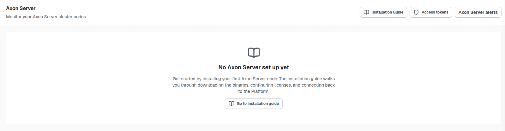
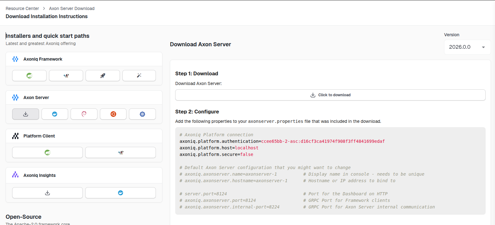

Axon Server
The client for Axoniq Platform has been built into Axon Server since version 2024.0.0. This means that you do not need to install a separate client to connect Axon Server to Axoniq Platform.
Connection technology
The Axon Server connector has been designed with privacy concerns in mind. It only collects metrics and health information, and does not collect any sensitive information. All information is sent over a secure SSL connection using the RSocket protocol.
Firewall configuration
The Axon Server connector needs to establish a connection to the Axoniq Platform servers.
This happens over port 7001 to IP address 34.111.249.186.
If your organization has a firewall, you need to allow this connection.
Installation
The installation depends on how you want to install Axon Server. When you go to "Axon Server" page in your Axoniq Platform, you will see a button to start the installation.

You will then see all the options to install Axon Server.

Axoniq Platform will guide you further through the process from there on out.
Exposed operations
The following operations are exposed by Axoniq Platform for Axon Server clients:
| Route | Description |
|---|---|
|
Simple call to check if the application is still alive. |
|
Returns client configuration settings to Axon Server, including the heartbeat interval, heartbeat timeout, and the interval at which |
|
Returns the current license for the cluster. Axon Server polls this route to keep its license up to date. |
|
Registers an Axon Server node with the platform when it joins the cluster, and returns the cluster configuration the node should use. |
|
Receives the periodic health and status report from Axon Server. The payload of this route is the data described in the next section. |
Data sent to Axoniq Platform
We will never send content of your event store, or sensitive information of any kind, to Axoniq Platform.
The status route receives:
-
Health information
-
Raft consensus replication status
-
Disk usage
-
Connection status
-
Event store status
-
-
Clients connected, including the command and query streams they hold
-
Optional throughput-limiting state, if rate limiting is active on the cluster
The following is a sample of the data sent to Axoniq Platform:
{
"clusterConnections": [
{
"name": "node-2",
"connected": true
},
{
"name": "node-3",
"connected": true
}
],
"replicationGroups": [
{
"name": "default",
"contexts": [
"default"
],
"state": "LEADER",
"commitIndex": 55,
"commitTerm": 53,
"lastAppliedIndex": 55,
"lastAppliedTerm": 53,
"lastLogIndex": 55,
"lastLogTerm": 53,
"firstLogIndex": 1,
"firstLogTerm": 1,
"currentTerm": 53,
"sinceLastMessageFromLeader": 0,
"leaderId": "node-1-86eff246-10da-4c81-bacb-ed7058b1d301",
"leaderName": "node-1",
"nodes": [
{
"nodeId": "node-1-86eff246-10da-4c81-bacb-ed7058b1d301",
"nodeName": "node-1",
"role": "PRIMARY"
},
{
"nodeId": "node-2-cbf8ea8b-304b-4875-877e-73e2c85b24f4",
"nodeName": "node-2",
"role": "PRIMARY"
},
{
"nodeId": "node-3-8e063d6b-c6d4-42fa-b861-8daaf037c1dd",
"nodeName": "node-3",
"role": "PRIMARY"
}
]
},
{
"name": "_admin",
"contexts": [
"_admin"
],
"state": "FOLLOWER",
"commitIndex": 819,
"commitTerm": 49,
"lastAppliedIndex": 819,
"lastAppliedTerm": 49,
"lastLogIndex": 819,
"lastLogTerm": 49,
"firstLogIndex": 1,
"firstLogTerm": 1,
"currentTerm": 49,
"sinceLastMessageFromLeader": 85,
"leaderId": "node-2-0b44ce3f-a2b7-4046-83d7-553d2f7d2bf9",
"leaderName": "node-2",
"nodes": [
{
"nodeId": "node-1-4a6b7f32-3c82-405e-8022-adee9d899841",
"nodeName": "node-1",
"role": "PRIMARY"
},
{
"nodeId": "node-2-0b44ce3f-a2b7-4046-83d7-553d2f7d2bf9",
"nodeName": "node-2",
"role": "PRIMARY"
},
{
"nodeId": "node-3-01fa4e7c-f7b2-4849-ab41-8ae9ee03c270",
"nodeName": "node-3",
"role": "PRIMARY"
}
]
}
],
"clients": [
{
"clientStreamId": "1@abcdef123456.6eb977b4-d654-46b2-af2b-75834390e0ee",
"clientId": "1@abcdef123456",
"context": "default",
"commandStreams": [
{
"streamId": "1@abcdef123456.ce673215-eeeb-4aed-9914-62d6095af18a",
"waitingMessages": 0,
"permits": 5000
}
],
"queryStreams": [
{
"streamId": "1@abcdef123456.c90fdfaf-d13f-41f3-87a4-faeda199f238",
"waitingMessages": 0,
"permits": 5000
}
]
}
],
"eventStores": [
{
"contextName": "default",
"lastEvent": -1,
"lastSnapshot": -1,
"waitingEventTransactions": 0,
"waitingSnapshotTransactions": 0
}
],
"diskPaths": [
{
"name": "default-EVENT-event",
"path": "/Users",
"freeBytes": 406694666240
},
{
"name": "replication-logs",
"path": "/Users",
"freeBytes": 406694666240
}
]
}